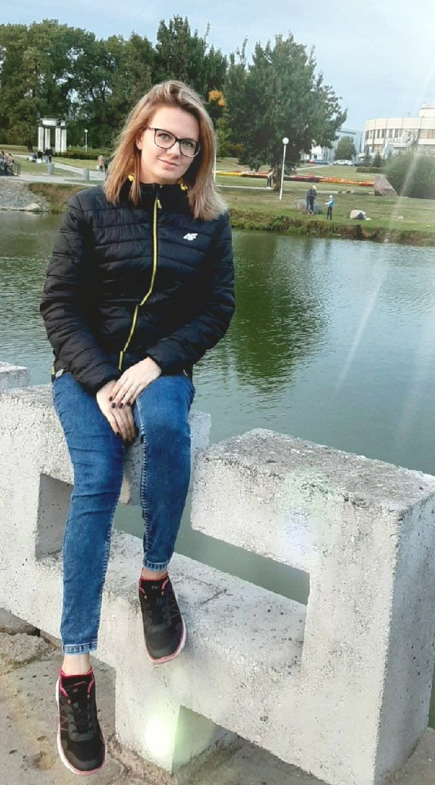
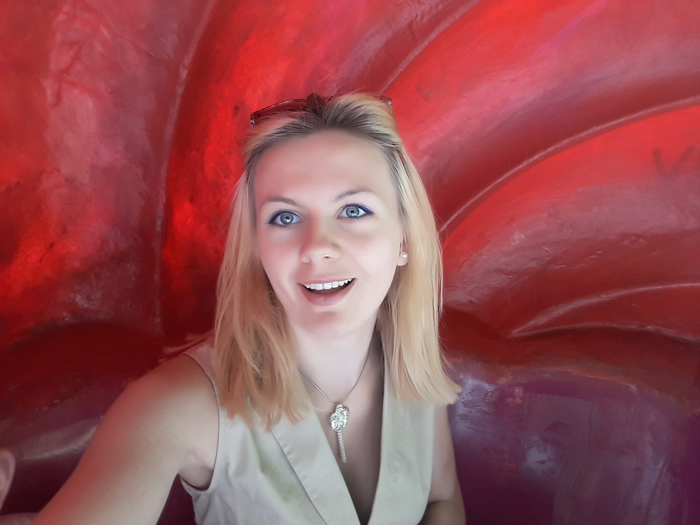

Повесть о девочке Алине

Однажды, в небольшом городке на юге Беларуси появилась на свет маленькая девочка Алина. Папа не выпускал ее с первых минут жизни. Девочка росла крепкой и задорной. Любила играть с детьми, но не любила делиться своими игрушками. Алина пошла сначала в садик, где стала центром внимания, а после и в школу, где она познакомилась с новыми людьми. Девочка занималась музыкой, танцами, спортом и руокделием.Она была единственным и самым любимым ребенком пока в ее жизни не появился маленький мальчик Артём. В этот миг Алина поняла, что главное в ее жизни -- это семья. Когда девочке Алине исполнилось 17 лет она решила поступать в университет, а именно в Белорусский государственный университет информатики и радиоэлектроники. Она встретила свою ныне лучшую подругу там же и они стали жить вместе. Она пережила многое, но смогла пройти половину своего пути в этом ВУЗе, а что было дальше...? Ответ на этот вопрос найдется только много лет спустя, когда девочка будет рассказывать эту историю детям.